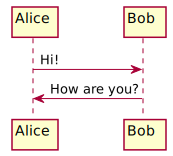

sphinx-example
Contents:
Code Documentation
Sample graphviz chapter
Sample chapter for images
Sample math chapter
Sample plantUML chapter
Sequence diagram
Class diagrams
Class diagrams dependencies
Simulation Class Diagrams
Sample chapter
Summary
sphinx-example
Sample plantUML chapter
View page source
Sample plantUML chapter
Sequence diagram

Class diagrams
Class diagrams dependencies
Simulation Class Diagrams
![class Class1 {
- privateVar: int
# protectedVar: str
+ publicVar: bool
+ getPrivateVar(): int
+ setPrivateVar(value: int): void
+ getProtectedVar(): str
+ setProtectedVar(value: str): void
+ getPublicVar(): bool
+ setPublicVar(value: bool): void
+ doSomething(): void
+ calculateValue(x: int, y: int): int
}
class Class2 {
- privateVar2: str
# protectedVar2: int
+ publicVar2: float
+ getPrivateVar2(): str
+ setPrivateVar2(value: str): void
+ getProtectedVar2(): int
+ setProtectedVar2(value: int): void
+ getPublicVar2(): float
+ setPublicVar2(value: float): void
+ doSomethingElse(): void
+ processData(input: str): str
}
class Class3 {
- privateVar: int
# protectedVar: str
+ publicVar: bool
+ getPrivateVar(): int
+ setPrivateVar(value: int): void
+ getProtectedVar(): str
+ setProtectedVar(value: str): void
+ getPublicVar(): bool
+ setPublicVar(value: bool): void
+ doSomething(): void
+ calculateValue(x: int, y: int): int
}
class Class4 {
- privateVar2: str
# protectedVar2: int
+ publicVar2: float
+ getPrivateVar2(): str
+ setPrivateVar2(value: str): void
+ getProtectedVar2(): int
+ setProtectedVar2(value: int): void
+ getPublicVar2(): float
+ setPublicVar2(value: float): void
+ doSomethingElse(): void
+ processData(input: str): str
}
class Class5 {
- privateVar: int
# protectedVar: str
+ publicVar: bool
+ getPrivateVar(): int
+ setPrivateVar(value: int): void
+ getProtectedVar(): str
+ setProtectedVar(value: str): void
+ getPublicVar(): bool
+ setPublicVar(value: bool): void
+ doSomething(): void
+ calculateValue(x: int, y: int): int
}
class Class6 {
- privateVar2: str
# protectedVar2: int
+ publicVar2: float
+ getPrivateVar2(): str
+ setPrivateVar2(value: str): void
+ getProtectedVar2(): int
+ setProtectedVar2(value: int): void
+ getPublicVar2(): float
+ setPublicVar2(value: float): void
+ doSomethingElse(): void
+ processData(input: str): str
}](_images/plantuml-01ce3b56278d6a943910424e63155c7dcaa84464.svg)
![class Configurator {
**note:** loading and handling of config information.
**note:** print selected configuration formatted
to the console
}
class Printer {
+ reset_count()
+ print(state : str, message : str)
}
note left of Printer::print
* print to console in standardised format.
Example: [ 1 ][ OK ][ "message" ]
* maybe also provide an option to log the
current session in txt/log file. Allows,
analysing/comparing runs late on.
end note
class Loader {
+ FID: dict
+ load_jMRUI(path : str)
}
note left of Loader::FID
Example:
FID["signal"] -> np.array
FID["parameters"]["LarmorFreq"] -> int
end note
note left of Loader : Instance of this class can be used to \n load lipids or metabolites.
class Mask {
+ FOV : float
+ slice_thickness : float
+ load_nii(path: str)
+ interpolation(voxel_size : int)
}
note left of Mask : Instance can load and handle: B0 Map, \n Metabolite Mask, Fat Mask. For interpolation \n possible PyTorch (form 1,1,x,y,z) or \n scipy.ndimage with (x,y,z).
class MRSIBuilder {
+ FID_lipids : dict
+ FID_metabolites : dict
- load(target : str, source : str)
- build_mrsi_lipids()
- build_mrsi_metabolites()
+ build_mrsi()
}
note right of MRSIBuilder::FID_metabolites
Examples:
FID_metabolites["signal"] : np.array
FID_metabolites["time"] : np.array
end note
note right of MRSIBuilder::load
Either load data from path or from an
simulation (class SpectralSimulator). Output
format from both sources should be identical.
end note
note right of MRSIBuilder::build_mrsi()
Also brings FID to spectral space.
end note
class SpectralSimulator {
+ metabolites()
+ lipids()
+ water()
+ macromolecules()
+ suppression(target : str)
+ get_spectrum(spectra : list) -> np.array
+ line broadening(spectrum : np.array)
}
note right of SpectralSimulator : Depending on the code style it also \n possible to create just the function simulate() \n with arguments "metabolites", "water", ...
note right of SpectralSimulator::suppression
Arguments: "Water", "Lipids"
end note
note right of SpectralSimulator::get_spectrum
To get a sum of the desired spectra.
For example: get_spectrum(["lipids", "water"])
end note
Loader ..> Configurator : maybe using paths
Loader ..> Mask : maybe using paths
MRSIBuilder --o Loader : load FID (metabolites, lipids)
MRSIBuilder --o SpectralSimulator : load simulated spectra](_images/plantuml-de1b4143295ae8c7e791dc9c558435cfc2a29e51.svg)